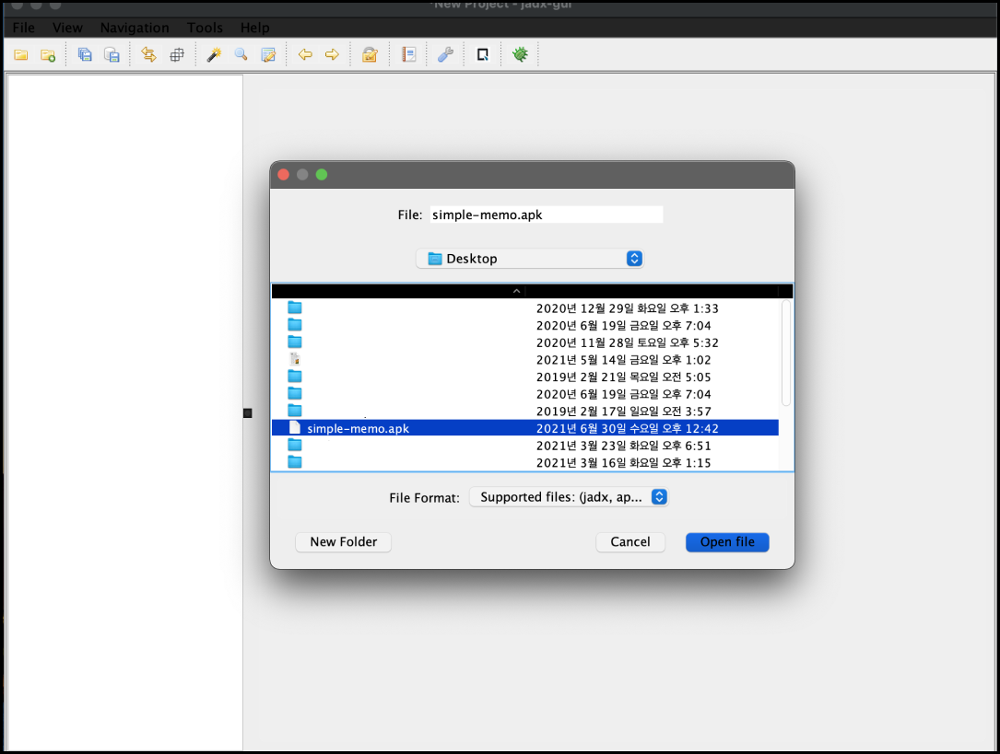
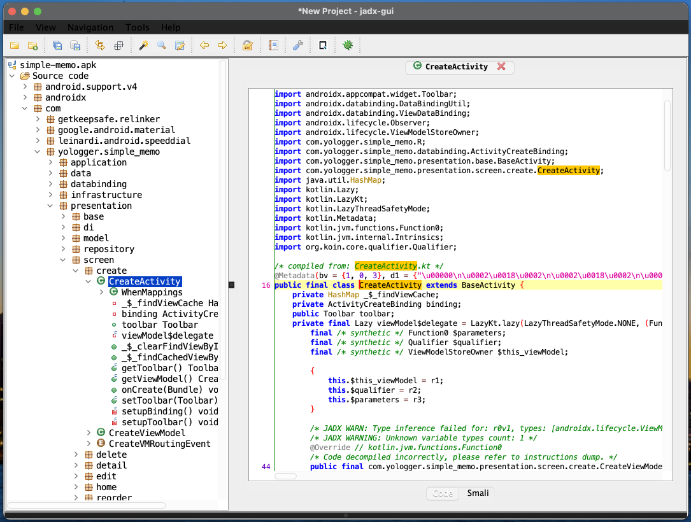

[Android] APK 디컴파일 하기 (jadx)
역공학과 디컴파일
역공학(Reverse Engineering)은 완성된 결과물을 반대로 분해하고 조각내어 설계와 원리를 분석하는 것을 의미합니다. 비유하자면 완성된 비행기를 분해하며 어떻게 조립되었고 동작하는지를 분석하는 것입니다.
소프트웨어 공학에서 역공학의 핵심 기술은 디컴파일입니다. 디컴파일(Decompile)은 실행 가능한 소프트웨어를 사람이 읽을 수 있는 소스코드로 변환하는 것을 말합니다. 안드로이드에서는 APK 파일을 사용하여 소스코드 파일로 복원하는 작업을 의미합니다. 컴파일이나 빌드의 반대 작업이라고 이해하시면 됩니다.
jadx
jadx를 사용하면 APK 파일을 디컴파일 할 수 있습니다.
(1) 설치
Mac OS 환경을 기준으로 설명합니다. 적절한 위치에 jadx디렉토리를 생성하고 해당 디렉토리로 이동합니다.
1 | mkdir jadx |
깃헙에서 jadx를 다운로드합니다.
1 | git clone https://github.com/skylot/jadx.git . |
jadx를 컴파일합니다.
1 | ./gradlew dist |
(2) 실행
jadx 실행파일은 jadx/build/bin/jadx-gui입니다. jadx를 실행합니다.
1 | cd build/jadx/bin |
디컴파일할 APK 파일을 선택합니다.

디컴파일된 소스 코드를 확인할 수 있습니다.
